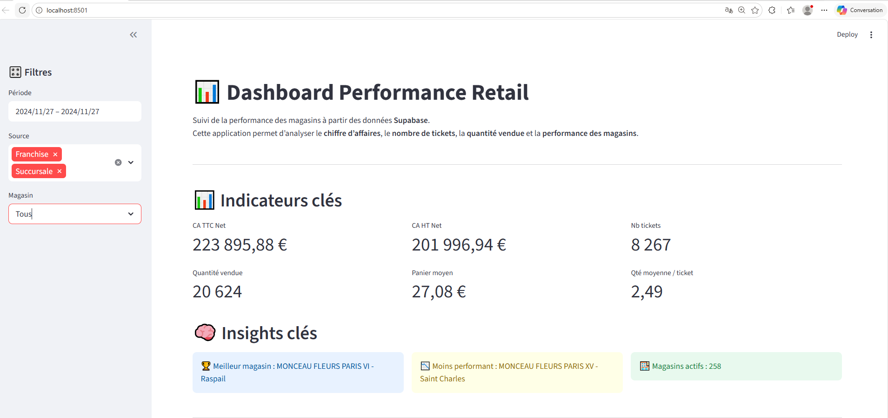

Projet 1 — Dashboard Performance Retail (300+ magasins)
↑ HautPower BI • KPI • Analyse ventes • Reporting quotidien
Contexte
Développement d’un système de pilotage de performance commerciale pour un réseau national de plus de 300 magasins.
Problématique
Centraliser les KPI commerciaux et fournir un reporting clair, homogène et exploitable par les équipes métier.
Travail réalisé
- Construction d’indicateurs de performance retail
- Consolidation et structuration des données
- Analyse des écarts N/N-1 et budget
- Création d’un dashboard interactif
- Industrialisation du reporting
Outils
SQL • Excel • Power BI • Streamlit • Supabase • VS Code

Résultat
Le dashboard améliore la visibilité des ventes, accélère le suivi des KPI et facilite l’identification des écarts de performance.
Liens
Projet 2 — Automatisation API → Cube BI (Achats fleurs)
↑ HautAPI • ETL/ELT • AWS • Sage BI • Data quality
Contexte
Mise en place d’un Cube Achat BI : intégration des données d’achats sur plusieurs années glissantes pour renforcer le pilotage (volumes, prix, fournisseurs, familles produits).
Problématique
Réduire les manipulations manuelles (Excel / exports) et fiabiliser l’alimentation du cube via des flux automatisés.
Approche
- Récupération des données via API / SFTP (selon source)
- Contrôles qualité (types, doublons, clés, périodes)
- Normalisation et préparation (staging)
- Alimentation du Cube BI et validation avec les métiers
Outils
AWS • API • ETL/ELT • SQL • Sage BI
✅ À ajouter : un schéma simple (source → staging → cube → dashboards).
Projet 3 — Analyse Python & Dashboard Streamlit Retail
↑ HautPython • pandas • Streamlit • Data Cleaning • Retail analytics
Objectif
Construire une analyse complète et interactive permettant de piloter la performance commerciale d’un réseau retail en comparant les succursales et franchises.
Travail réalisé
- Nettoyage et harmonisation de deux sources Excel hétérogènes
- Traitement des dates mixtes et normalisation des colonnes
- Création d’indicateurs : CA N, CA N-1, budget, croissance et réalisation budgétaire
- Ajout de filtres dynamiques : date, région, enseigne, type de réseau
- Analyse Top / Flop magasins et détection d’alertes business

Résultat
Le dashboard permet d’identifier rapidement les magasins performants, les zones de sous-performance et les écarts entre objectif budgétaire et performance réelle.
Liens
Contact
Email : aimechristophedossa@gmail.com
© 2026 Christophe DOSSA • Projets